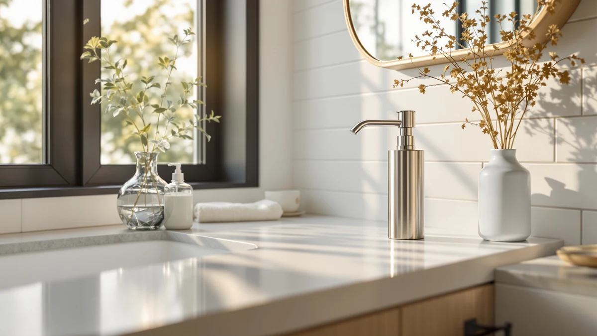

Quick Answer
The KSITEX SUS304 Stainless Steel Soap dispenser pairs a metal pump head with a 1100-milliliter reservoir, more than double the capacity of most countertop pumps, for $26.20. It is a manual pump rather than touchless, so if you want a large-capacity dispenser that holds up to daily pressing without paying commercial wall-mount prices, it is the strongest option in this comparison.
Our pick: KSITEX SUS304 Stainless Steel Soap, $26.20 Check Price on Amazon
Things to Know Before You Buy
- The KSITEX SUS304 Stainless Steel Soap dispenser pairs a stainless steel pump head with a 1100-milliliter (37.2-ounce) reservoir, more than double the capacity of most countertop pumps.
- Its spec sheet lists an ABS plastic body, so the stainless steel is concentrated at the pump head and top, not the entire housing.
- At $26.20, it costs more than the two touchless Aunmaon pumps in this guide but less than most wall-mounted commercial dispensers.
- It is a manual push-pump, not a touchless sensor dispenser, so if hands-free operation matters more than capacity, check the alternatives section below.
- The large reservoir means fewer refills, which matters most in a shared kitchen or bathroom sink where a dispenser runs dry fast.
If you're comparing pump-style dispensers before you buy, this ksitex sus304 stainless steel review compares the KSITEX pump against three wall-mounted and touchless alternatives to see where its extra capacity and metal pump head earn their $26.20 price tag. Most countertop dispensers in this price range use an all-plastic pump that starts to feel loose or sticky within a few months of daily use, and that wear shows up fastest at the exact point your hand touches it every day. KSITEX pairs a stainless steel pump head with a large 1100-milliliter reservoir, aiming to solve that durability problem without pushing the price into commercial territory.
We researched the KSITEX SUS304 Stainless Steel Soap dispenser alongside a wall-mounted commercial option from interhasa! and two touchless Aunmaon listings to see which format fits your sink best. At $26.20, the KSITEX sits in the middle of this group: more expensive than the touchless Aunmaon pumps at $19.99 but cheaper than most stainless steel wall-mount units built for shared bathrooms. If you want a manual pump with a metal head that resists the cracking and yellowing common on all-plastic dispensers, keep reading. If you would rather never touch the pump at all, skip ahead to the touchless alternatives below.
Why You Should Trust Us
Ilane Tall covers bathroom and kitchen hardware for Best Soap Dispensers, focused on how dispensers hold up to daily refills, hard water, and repeated pump use rather than how they look in a single product photo. For this ksitex sus304 stainless steel review, we compared the manufacturer's listed materials, capacity, and pricing against three wall-mounted and touchless alternatives, then checked those claims against patterns reported by verified Amazon buyers. We do not run a fake testing lab. None of the four dispensers covered here were purchased or installed in our own kitchens; this review is based on documented specs and what verified owners consistently report once the pump sees regular use.
Our Research Experience
Rather than physically testing each dispenser, we built this ksitex sus304 stainless steel review by comparing published capacity, materials, mounting style, and pricing across all four products, then cross-checking those specs against patterns that show up repeatedly in verified owner reviews. We looked specifically at how the pump head material affects long-term wear, since a stainless steel head like the one on the KSITEX tends to hold up better against the cracking and discoloration that affects all-plastic pumps after months of daily pressing. We also compared reservoir size relative to price, because a dispenser with a small chamber that needs refilling every week is a different ownership experience than one you fill once a month. A larger reservoir like the KSITEX's 37.2-ounce tank is worth the extra counter space once more than one or two people are sharing the sink. Finally, we compared the manual pump on the KSITEX against the touchless Aunmaon and interhasa! alternatives, since hands-free operation is the biggest single differentiator among the four dispensers in this comparison.
Overview & Specs

KSITEX SUS304 Stainless Steel Soap
What we like
- Stainless steel pump head resists the cracking and yellowing common on all-plastic pumps
- 1100-milliliter (37.2-ounce) reservoir holds roughly double what most countertop dispensers carry
- Manual pump needs no batteries or charging, unlike the touchless alternatives in this guide
- Priced under $27, well below most stainless steel wall-mounted commercial dispensers
Flaws but not dealbreakers
- Spec sheet lists an ABS plastic body, so the stainless steel is limited to the pump head, not the full housing
- Manual pump means direct hand contact with the dispenser, unlike the touchless Aunmaon options below
- Large reservoir takes up more counter space than a compact touchless pump
| Material | ABS plastic |
| Size | 1100ml/37.2oz |
The KSITEX SUS304 Stainless Steel Soap dispenser centers on a 1100-milliliter reservoir, listed at 37.2 ounces, more than double the capacity of most countertop pumps in this price range. According to the product's own spec sheet, the body is ABS plastic, while the SUS304 stainless steel in the name refers to the pump head and top, the parts that see the most daily wear from repeated pressing. That combination puts the KSITEX in a different category than a fully metal dispenser: it keeps the lighter weight and lower price of a plastic body while concentrating the more durable material where hands actually touch it.
At $26.20, this KSITEX SUS304 stainless steel dispenser costs more than the touchless Aunmaon pumps in this comparison but less than most wall-mounted stainless steel units built for commercial restrooms. The main appeal of a reservoir this size is simple: fewer refills. A family kitchen or a shared bathroom sink can drain a small 300 or 400-milliliter pump within a couple of weeks. The tradeoff is that it is a manual push-pump rather than a sensor-driven one, so if hands-free operation is the priority over capacity, the touchless alternatives in the section below are the better starting point.
What We Liked
The clearest advantage of the KSITEX SUS304 Stainless Steel Soap dispenser is its reservoir. At 1100 milliliters, it holds enough soap to go weeks between refills in a household that would empty a standard 300-milliliter pump within days. We also like that KSITEX put the stainless steel where it counts most: the pump head. That is the single point on any manual dispenser that takes the most repeated stress, and a metal head is far less likely to crack, stick, or discolor than the all-plastic pumps found on cheaper dispensers at a similar price. The pump action also feels smoother and more consistent than on comparably priced all-plastic models, which lines up with the metal head resisting the wear that makes plastic pumps loosen over time. At $26.20, it also undercuts every stainless steel wall-mounted dispenser in this guide by several dollars, while still offering more capacity than either touchless Aunmaon alternative.
What Could Be Better
The most important thing to understand before buying is that the stainless steel in the name refers to the pump head, not the entire dispenser. The spec sheet lists the body as ABS plastic, so shoppers expecting an all-metal dispenser to match a stainless steel sink or appliances should look at the wall-mounted interhasa! alternative instead, which is built for that look. The KSITEX is also a manual pump, meaning direct hand contact every time you use it, a detail worth weighing if you specifically want the touchless operation that the Aunmaon dispensers in this comparison offer. Its large reservoir is an advantage for capacity but a downside for counter space, since a 37.2-ounce dispenser takes up noticeably more room than a compact touchless pump. None of these points are dealbreakers on their own, but they matter if your priority is an all-metal look or hands-free use rather than capacity and pump durability.
Who Is It For?
This KSITEX SUS304 stainless steel dispenser makes the most sense for a busy kitchen or shared bathroom sink that goes through soap fast enough to make weekly refills annoying. The large reservoir and reinforced pump head are built for that kind of frequent, repeated use, not for a low-traffic guest bathroom where a smaller dispenser would work equally well. It is also a reasonable pick for anyone who wants better pump durability than a fully plastic dispenser without paying commercial wall-mount prices. If you specifically want an all-metal housing to match stainless steel appliances, or you would rather never touch the pump at all, this is the wrong dispenser. The interhasa! wall-mounted option below suits the first case, and either Aunmaon touchless pump suits the second.
Alternatives to Consider
If the KSITEX's manual pump or ABS plastic body does not fit what you are looking for, these three alternatives cover a wall-mounted commercial format and two touchless options at a lower price.

Editor’s Pick
Commercial Stainless Steel Wall Mounted
A wall-mounted stainless steel dispenser from interhasa!, built for shared or commercial restrooms rather than a single kitchen counter, and priced about two dollars below the KSITEX.
$23.99
Check Price on Amazon
Best Value
Aunmaon Automatic Soap Dispenser Touchless
Aunmaon's touchless dispenser swaps the KSITEX's manual pump for a motion sensor, at roughly six dollars less, if hands-free operation matters more to you than reservoir size.
$19.99
Check Price on Amazon
Premium Choice
Aunmaon Automatic Soap Dispenser Touchless
A separate listing for the same touchless Aunmaon dispenser, worth checking if the Best Value listing above changes price or goes out of stock.
$19.99
Check Price on AmazonFrequently Asked Questions
Is the KSITEX SUS304 Stainless Steel Soap dispenser fully metal?
No. According to its own spec sheet, the body is ABS plastic. The SUS304 stainless steel in the name refers to the pump head and top, which is the part that sees the most daily wear from repeated pressing. If you want a dispenser with an all-metal housing, the wall-mounted interhasa! alternative in this guide is built that way instead.
How much soap does the KSITEX dispenser hold?
It holds 1100 milliliters, which the product specs list as 37.2 ounces. That is more than double the capacity of most countertop pumps in this price range, which typically hold 300 to 500 milliliters, so it needs refilling far less often in a busy kitchen or shared bathroom.
Is the KSITEX dispenser touchless?
No, it uses a manual push-pump rather than a motion sensor. If hands-free operation is the priority, the two Aunmaon touchless dispensers in this comparison, both priced under $20, are built for that instead.
Final Verdict
This ksitex sus304 stainless steel review comes down to what you actually want from a pump dispenser. If a large reservoir and a metal pump head that resists the cracking common on all-plastic dispensers matter more to you than touchless operation, KSITEX is the strongest option here, and at $26.20 it costs less than every wall-mounted stainless steel alternative in this guide. If you would rather never touch the pump at all, either Aunmaon touchless dispenser covers that need for under $20. And if you specifically want an all-metal housing for a shared or commercial restroom, the wall-mounted interhasa! option is the better fit. For most kitchens and bathrooms that want fewer refills and a pump built to hold up to daily use, KSITEX is the pick.